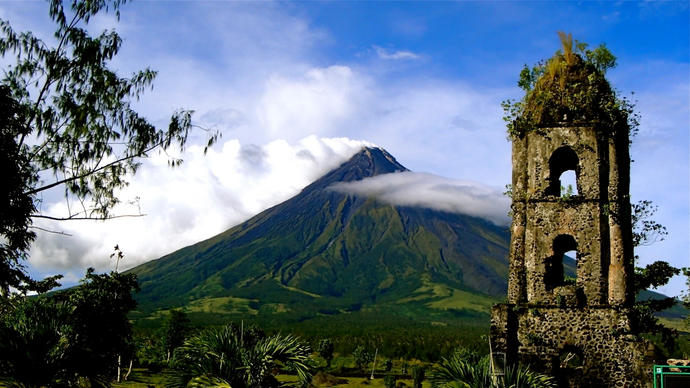
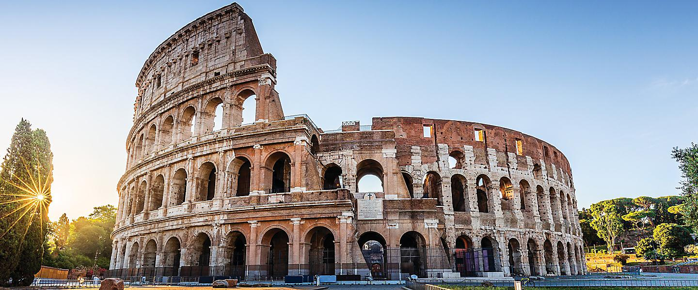
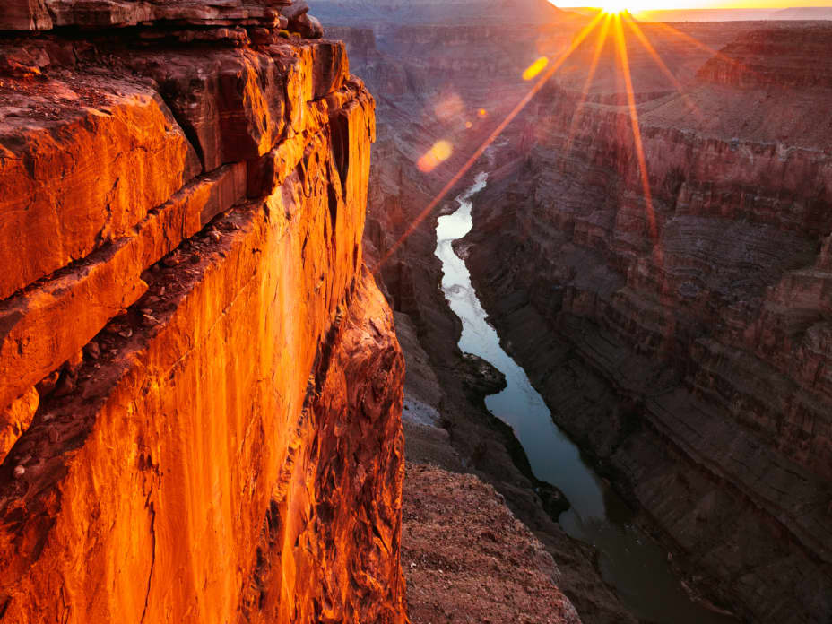

Welcome to Our Tourist Destinations
Asia
TAJ MAHAL

The Taj Mahal is a magnificent marble mausoleum in Agra, India, known for its stunning architecture and rich history.
GREAT WALL OF CHINA
The Great Wall of China is a world-famous symbol of ancient Chinese engineering, offering breathtaking views of the landscape.
MAYON VOLCANO

The Mayon Volcano is situated in the southern part of the main island of Luzon, 500 kilometres south of Manila. Towering at a height of 2,462 meters above sea level, it is known for its perfectly conical shape whose natural beauty has inspired a number of legends and art.
Europe
EIFFEL TOWER

The Eiffel Tower is an iconic Parisian landmark, providing panoramic views of the city and a romantic atmosphere.
COLOSSEUUM IN ROME

The Colosseum in Rome is a historic amphitheater, once hosting grand gladiator contests, and it's a testament to ancient Roman engineering.
ACROPOLIS OF ATHENS

The Acropolis is a famous ancient citadel located in Athens. It once played a central role in ancient Greek society, serving as a religious center and a site to display Athenian power. Most temples and structures inside the Acropolis were built in and around the 5th century BCE.
America
GRAND CANYON

The Grand Canyon is a natural wonder in Arizona, offering stunning vistas and outdoor adventures in its rugged terrain.
MACHU PICCHU

Machu Picchu is an ancient Incan city nestled in the Andes Mountains, known for its archaeological significance and breathtaking scenery.
STATUE OF LIBERTY
The Statue of Liberty is a 305-foot (93-metre) statue located on Liberty Island in Upper New York Bay, off the coast of New York City. The statue is a personification of liberty in the form of a woman. She holds a torch in her raised right hand and clutches a tablet in her left.